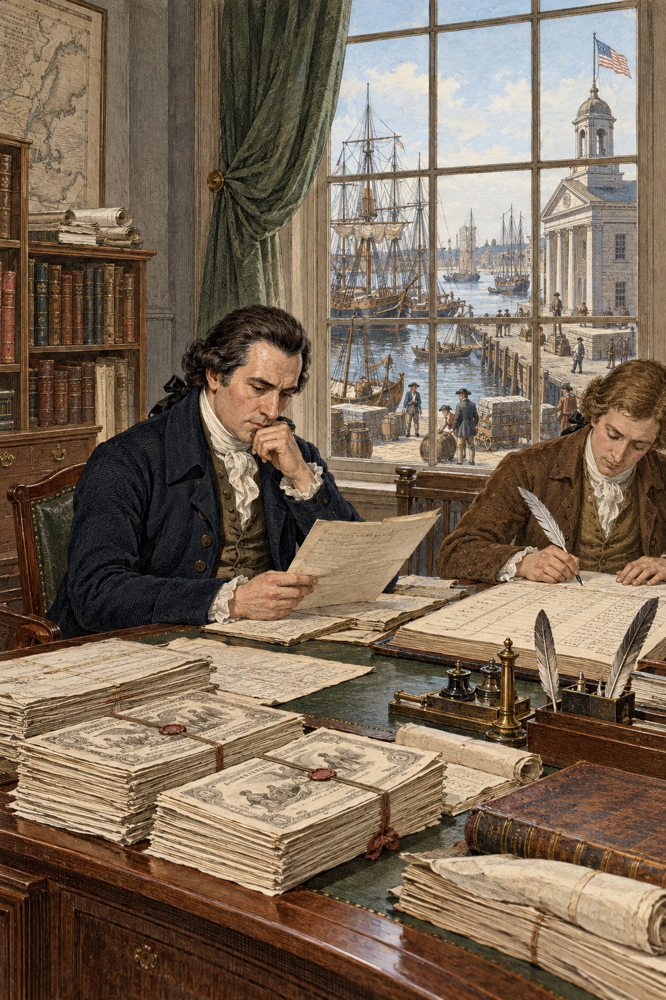
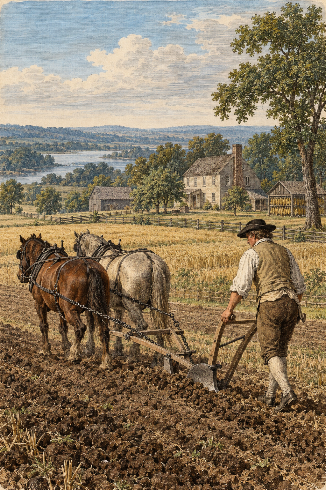
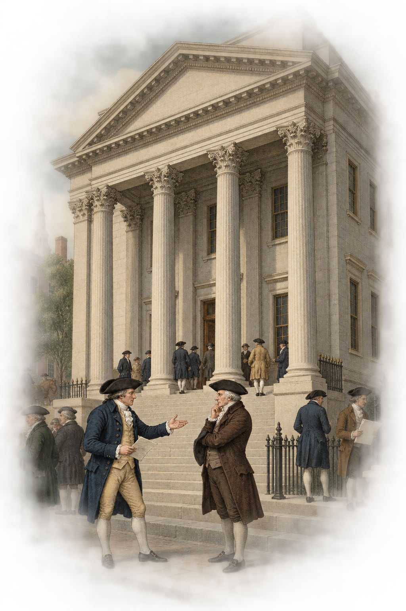
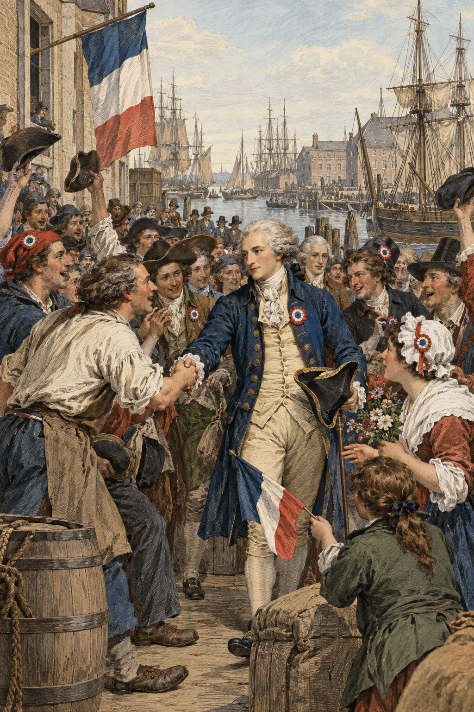
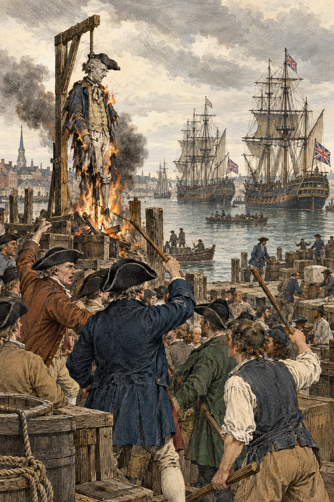
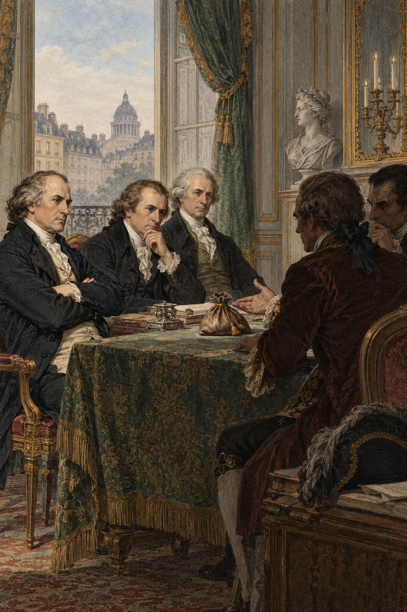
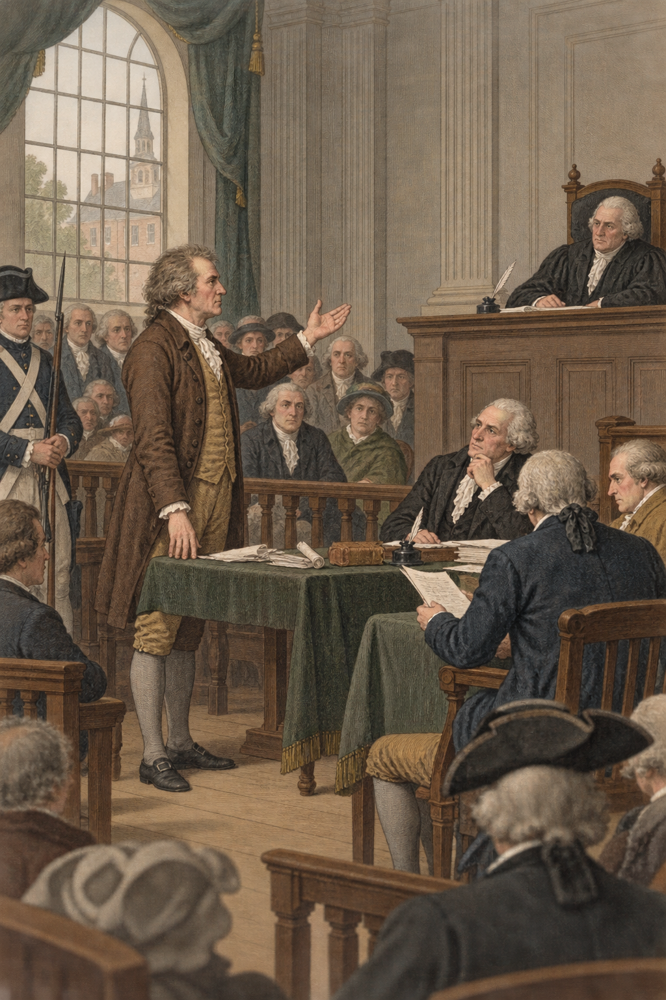
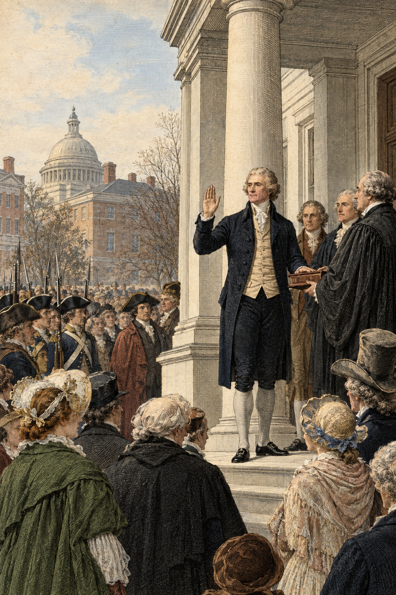

Raise national revenue.
Use public credit.
Operate courts and departments.
Make federal law effective.
Now that the government had power, what should that power build?
Revolutionary debt, uncertain credit, weak revenue, and dependence on stronger nations.
A government credible enough to collect, borrow, survive war, and command respect abroad.

Permanent debt, concentrated finance, executive influence, and wealthy interests shaping policy.
Delegated federal power, independent citizens, and productive agriculture.

"Necessary" means indispensable. If another means exists, the bank is not allowed.
"Necessary" means useful and consistent with constitutional ends, not the only imaginable tool.

Credit, commercial development, executive energy, and national strength protected independence.
Limited delegated power, vigilant citizens, and resistance to concentrated wealth protected liberty.
Could you cheer a sister revolution and still obey your own government?

War with Britain could wreck American commerce and credit.
Republicans saw a humiliating tilt toward the old enemy.


Republican congressman convicted under the Sedition Act.
Months in jail.
Re-elected while imprisoned.
Helps decide Jefferson's election in the House.

States should "interpose" against alarming federal violations.
Federal acts beyond delegated powers could be treated as void.
Jefferson meant French radicalism, irreligion, and social disorder.
Federalists meant monarchy, armies, taxes, and repression.
Could either side consent to lose when defeat looked like the end of liberty?

Hamilton and Jefferson feared different threats to liberty and imagined different republican futures.
Their disagreement became organized opposition even though Americans distrusted faction.
The crises of 1798-1800 tested whether opponents could criticize, organize, win, and govern.
Jefferson's Republicans now control the national power they once feared. What will they do with it?
Interesting, but not required for quizzes, worksheets, notebooks, or exams.